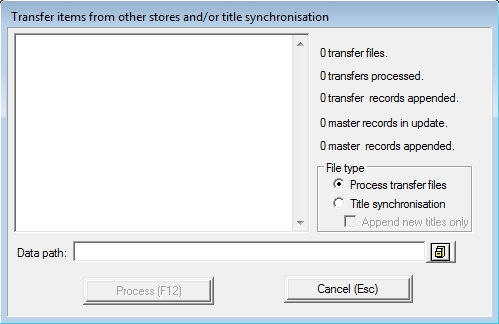
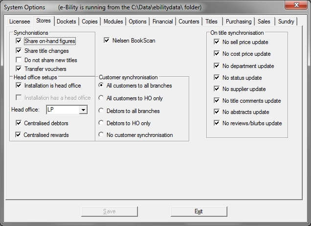

This window is located on the main menu in Purchasing -> Transfers -> Import From Disk.
This section allows you to manually load in stock transfers and title synchronisation files.

There are two types of import, as mentioned above, select from the two options of;
| · | Process transfer files: Stock transfer files created using the 'by disk' method from the senders end.(will be 2 files, update(transfer number).DBF and update(transfer number).FPT )
|
| · | Title synchronisation: Sync files containing product details that have been exported from any store. (Will be 2 files, tsupdate(number).DBF and tsupdate(number).FPT)
|
Append New Titles Only
When doing a Title synchronisation, you have the added option to only add titles that you dont already have in your system, otherwise it will add new and update the existing based on your settings for update.
To setup what does get changed when it does an update, from the main menu open Utilities -> System Options -> Stores Tab (shown below)
The options are listed below under the On Title Synchronisation section. If the option is checked, it will not update that filed on Title Synchronisation.

Next (while still in the Title Synchronisation window) click on the icon
Note: It is assumed that you have either received the files on a thumbdrive or saved the attachments from an email that was sent through to your site and that these files have been saved in the folder you will be selecting.

Click on the folder where the file are saved, then Click the OK button.
Next click the Proceed